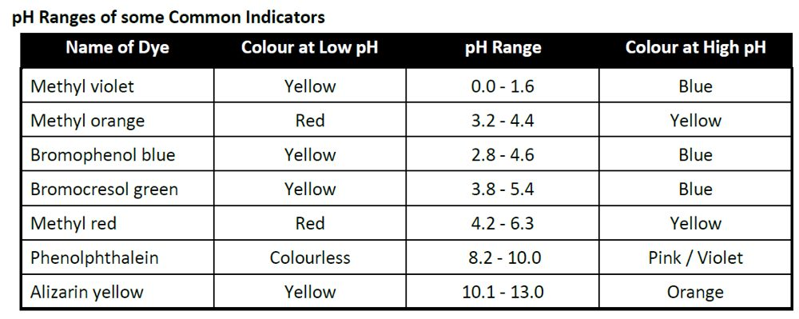
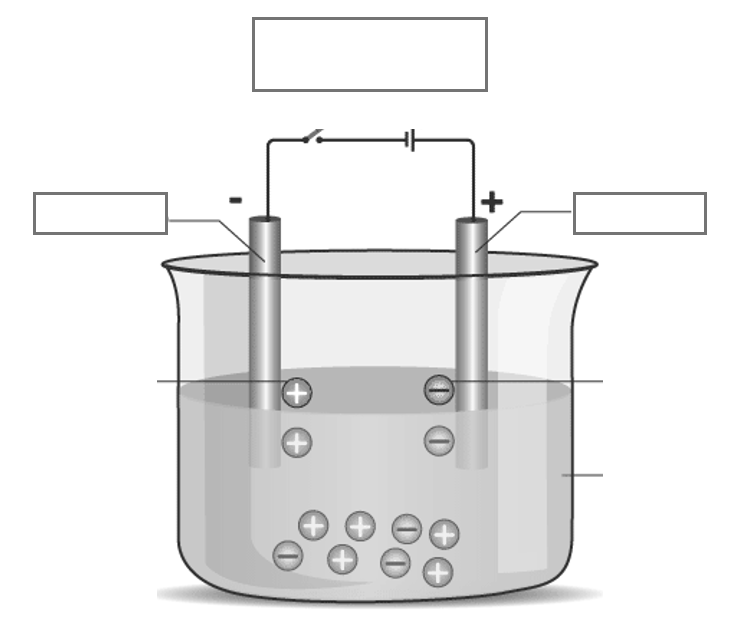
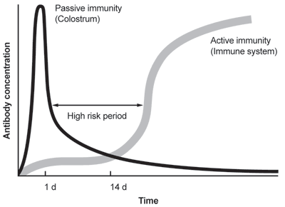
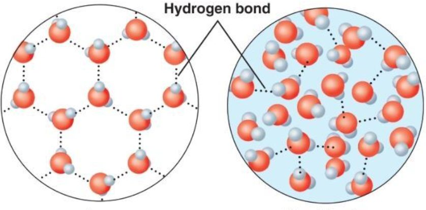
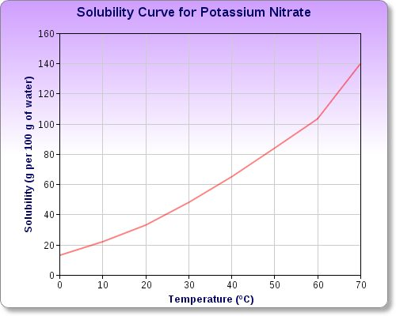

This exam covers Minerals to Metals, Immunology and Water Analysis.
Section A: Multiple choice (25 marks)
Minerals to Metals
The atomic mass of an element is determined by
Ionisation is the process by which
Which of the following allows pure metals to be good conductors of electricity?
When Group 1 metals react with water, the likely products are
Which of the following would you expect to be the least reactive with water?
Which of the following metals is likely to cause a displacement reaction when placed in a solution of aluminium nitrate?
Only a metal above aluminium in the reactivity series can displace it.
Consider this reaction for Questions 7 to 9: Ca(s) + MgSO4(aq) → Mg(s) + CaSO4(aq)
Which statement best describes the transfer of electrons in this reaction?
Identify the reducing agent in the reaction.
The reducing agent is the substance that is oxidised (loses electrons): calcium metal.
Identify the spectator ion.
Immunology
The purpose of inflammation in the immune response is to:
An example of artificial active immunity is:
Which cells are directly responsible for producing antibodies?
Which one of the following is not a mode of disease transmission?
What is the main role of cytotoxic T cells in the immune system?
The term "herd immunity" refers to:
Vaccines are often made from:
Which one of the following is true about bacteria compared with viruses?
Water Analysis
What does cohesion in water refer to?
Water's high surface tension is mainly due to which property?
What is the chemical formula of sulfuric acid?
Which of the following is a property of bases?
What would be the result of adding an acid to a carbonate?

Using the table above, which of these indicators would turn pink in a basic solution?
When solutions of lead(II) nitrate and potassium iodide are mixed, a yellow precipitate forms. What is the precipitate?
At 10 °C, a maximum of 8 g of KClO3 will dissolve in 100 mL of water. At the same temperature, how many grams of KClO3 will dissolve in 50 mL?
Section B: Short answer (45 marks)
Minerals to Metals
Complete the table. (Type formulas with ordinary numbers.)
| Compound | Chemical formula |
|---|---|
| Aluminium oxide | |
| Ammonium sulfate |
Describe the structure of metallic bonding.
Metallic bonding is the electrostatic attraction between a lattice of positive metal ions (1 mark) and a "sea" of delocalised electrons (1 mark).
Write a balanced equation for the reaction between potassium metal and water. (States are not needed.)
K + H2O → +
Predict whether these displacement reactions occur.
Potassium + aluminium nitrate:
Zinc sulfate + magnesium:
Metals such as silver and gold can be found in nature in their pure forms, whereas metals like sodium and potassium are commonly found as salts in the ocean. Explain why these substances are found in different forms in nature.
Silver and gold are unreactive and do not readily form compounds, so they can exist in pure form. Sodium and potassium are highly reactive, so they are always found in stable compounds such as salts.
Question 6 (4 marks)
The reactivity series lets us predict whether a reaction can occur. For four metals: C > B > D > A (most reactive first).
Complete the results table: ✓ = displacement, ✗ = no reaction.
| A solution | B solution | C solution | D solution | |
|---|---|---|---|---|
| Metal A | ✗ | |||
| Metal B | ✗ | |||
| Metal C | ✗ | |||
| Metal D | ✗ |
A metal displaces another metal from its solution only if it is more reactive. C displaces all three others, B displaces D and A, D displaces only A, and A displaces nothing.
The most reactive metal in this list is magnesium. Write a balanced equation for magnesium metal reacting with zinc sulfate.
Mg + ZnSO4 → +
Write an equation for the oxidation reaction that occurs in these reactions: Mg → + e−
Question 7 (3 marks)
To extract copper from malachite, Cu2CO3(OH)2, it is first dissolved in sulfuric acid. The copper ions in the solution can then be used for electrolysis. The diagram shows an electrolysis set-up to extract copper.

- The left electrode (connected to −) is the , and the right electrode (connected to +) is the .
- In the wires, electrons flow from the .
- Half-equation at the negative electrode: Cu2+ + e− →
Immunology
Question 8 (8 marks)
Case study: measles outbreak in Portland, Oregon
In Portland, Oregon, measles has spread quickly because of low vaccination rates in certain communities. Measles is a highly contagious virus, spread mainly through respiratory droplets, which can lead to serious complications such as pneumonia and encephalitis.
Measles outbreaks are more likely where vaccination coverage falls below the level needed for herd immunity, which is typically about 90–95% for measles. In response, health authorities have launched a public awareness campaign about vaccination and set up temporary vaccination clinics in high-risk areas.
Explain the importance of herd immunity.
Herd immunity reduces the spread of disease, protecting people who cannot be vaccinated, such as those with weakened immune systems.
Describe how the body might respond to the measles virus during the first infection.
The adaptive immune response identifies the measles virus as foreign (non-self) (1 mark). It produces specific antibodies to neutralise the virus and creates memory cells that "remember" the virus for future responses (1 mark).
On second exposure, antibodies are produced much faster and in larger amounts. Explain why, and how this often results in fewer or milder symptoms.
Memory cells rapidly recognise the virus, so the immune system quickly produces a large amount of antibodies (1 mark). This fast response neutralises or destroys the virus before symptoms develop (1 mark).
Is this measles outbreak an epidemic, endemic or pandemic? Explain why.
An epidemic, because it is a sudden increase in cases in a specific area (Portland, Oregon).
Explain how antibiotics control bacterial infections, and why they are not used to treat viral infections like measles.
Antibiotics target structures or functions specific to bacteria, such as cell walls or protein synthesis, killing bacteria or stopping their growth (1 mark). Viruses don't have these bacterial structures and replicate inside host cells, so antibiotics don't work on them (1 mark).
Two different outbreaks have occurred:
- Influenza in a hospital: influenza is spreading rapidly among patients and healthcare workers in close quarters and shared spaces.
- Vibrio bacterial infection in a coastal town: residents developed infections after swimming in warm seawater contaminated with Vibrio bacteria.
For each, suggest an effective strategy to reduce transmission and explain why it would work.
- Influenza: healthcare workers and patients wear masks and/or infected patients are isolated (1 mark). This contains the respiratory droplets that spread influenza, limiting the chance of the virus passing between people in close quarters (1 mark).
- Vibrio: health officials warn residents and tourists not to swim in the contaminated seawater. This reduces contact with the bacteria, which live in the water, and so lowers the risk of infection (1 mark).
Question 10 (4 marks)
The graph shows how long the passive immunity from colostrum protects a calf. Colostrum is the first milk produced by the mother after birth; it contains antibodies that help protect the calf. By day 14 this immunity starts to fade, and the calf begins to rely on its own immune system, entering a risk period for sickness.

What could happen if the calf did not receive enough colostrum at birth?
The calf would have lower levels of passive immunity (fewer antibodies) (1 mark), so it would be at greater risk of infection and sickness during its first weeks, before its own immune system is fully active (1 mark).
Women are advised to get the whooping cough (pertussis) vaccine during pregnancy to protect their newborns, who are especially vulnerable but too young to be vaccinated. When vaccinated in the third trimester, mothers pass protective antibodies to their babies, reducing the risk of severe illness in the baby's first months.
Even though the mother was vaccinated, the immunity the baby receives is passive. Why isn't it active immunity for the baby?
The baby receives ready-made antibodies from the mother (1 mark). The baby's own immune system has not produced the antibodies or made memory cells, so the protection is temporary (passive) (1 mark).
Water Analysis
Question 11 (5 marks)

Does water have stronger intermolecular bonding as a solid or as a liquid? Justify your answer using the diagram.
The solid has stronger intermolecular bonding (1 mark).
Any suitable comment about structure (1 mark): ice has more hydrogen bonds between molecules; ice's lattice maximises intermolecular bonds, while the liquid is disordered; intermolecular bonds are broken when going from solid to liquid.
Why does water expand when it changes from a liquid to a solid?
In ice, the molecules form an open hexagonal lattice with larger spacing (a gap in the middle of each hexagon). Liquid water molecules don't need to form hexagons, so they pack more closely.
Apart from density, name other physical properties of water that make it unique and allow life to exist on Earth.
Any two: high melting point, high boiling point, high heat capacity, good (polar) solvent.
Question 12 (5 marks)
Use the solubility curve for KNO3 below to answer the questions.

What is the solubility of KNO3 (g per 100 g water) at 60 °C?
If 20 g of KNO3 is dissolved in 50 g of water at 40 °C, what type of solution exists?
At 40 °C, the solubility is 64 g per 100 g, which is g per 50 g of water. So the solution is .
A saturated solution of KNO3 in 100 mL of water at 60 °C is cooled to 10 °C. What mass of crystals will precipitate out of the solution?
At 60 °C the solubility is 104 g per 100 g; at 10 °C it is 22 g per 100 g (1 mark). Mass of crystals = 104 − 22 = 82 g (1 mark).
Question 13 (6 marks)
A student mixes hydrochloric acid (HCl) with baking soda (NaHCO3) and sees bubbling. Next, they mix silver nitrate (AgNO3) solution with sodium chloride (NaCl) solution and see a white solid form.
In the first experiment, what type of reaction occurs?
What does the bubbling show? The presence of gas.
In the second experiment, what type of reaction occurs?
What is the formula of the white solid?
Write the balanced chemical equation, with states, for the reaction in the first experiment.
HCl(aq) + NaHCO3(s) → + H2O +